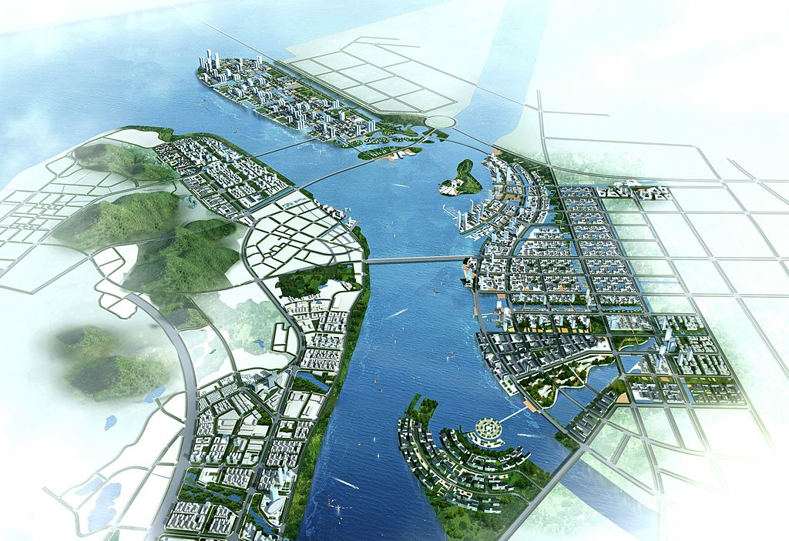

Smart Cities

La expresión «ciudad inteligente» es la traducción y adaptación del término en idioma inglés «smart city». Es un concepto emergente, y por tanto sus acepciones en español y en otros idiomas, e incluso en el propio idioma inglés,1 están sujetas a constante revisión. Es también un término actual, que se utiliza como un concepto de marketing (mercadotecnia) en el ámbito empresarial, en relación con políticas de desarrollo, y en lo concerniente a diversas especialidades y temáticas. Las ciudades inteligentes son inteligentes no solo en la forma en que sus gobiernos usan la tecnología, sino también en la forma en que controlan, analizan, planifican y administran la ciudad2.
La ciudad inteligente, a veces también llamada ciudad eficiente o ciudad súper-eficiente, se refiere a un tipo de desarrollo urbano basado en la sostenibilidad3 que es capaz de responder adecuadamente a las necesidades básicas de instituciones, empresas, y de los propios habitantes, tanto en el plano económico, como en los aspectos operativos, sociales y ambientales.4
AlgorithmicGovernance.svg.png
El concepto Smart City surge de la evolución de las llamadas Ciudades Digitales, que en el año 2004 nacen en España tras un trabajo que realizó el Ministerio de Industria de este país con la elaboración del primer programa de Ciudades Digitales que se abordaba en el mundo. Previo a la elaboración de este trabajo, la empresa española ACCEDA presidida por Enrique Ruz Bentué reunió a más de 30 empresas de diversa procedencia sectorial (telecomunicaciones, seguridad, construcción, audiovisual, electrónica de consumo, material eléctrico, informática, salud, educación, etc), junto a gobiernos de regiones y ciudades españolas, para crear Comunidad Digital. El resultado de esa reunión multisectorial llevó a la presentación efímera de una ciudad de 5.000 m² que incluía viviendas, un banco, hospital, hotel, oficina de tributación, correos, oficinas de gobierno, escuela y todo en un entorno urbano con alumbrado público, semáforos, mobiliario urbano y todo lo que conformaría una ciudad verdadera, pero en una presentación de formato cinematográfico. En Comunidad Digital, Enrique Ruz presentó de la mano de empresas como ZTE, Telefónica, Siemens, Gas Natural, Prosegur, Berker, INDRA, RACE y otras, la primera Ciudad Digital; que años más tarde IBM bautizaría como Smart City.
Ciudades inteligentes, dado su origen natural de las Ciudades Digitales, se basa en el uso intenso de las Tecnologías de la Información y Comunicación (TIC) en prestación de servicios públicos de alta calidad y calidez, seguridad, productividad, competitividad, innovación, emprendimiento, participación, formación y capacitación.
Una ciudad o complejo urbano podrá ser calificado de inteligente en la medida que las inversiones que se realicen en capital humano (educación permanente, enseñanza inicial, enseñanza media y superior, educación de adultos…), en aspectos sociales,1en infraestructuras de energía (electricidad,5 gas),67 tecnologías de comunicación (electrónica, Internet) e infraestructuras de transporte,5 contemplen y promuevan una calidad de vida elevada, un desarrollo económico-ambiental durable y sostenible, una gobernanza participativa,8 una gestión prudente y reflexiva de los recursos naturales, así como un buen aprovechamiento del tiempo de los ciudadanos.
Las ciudades modernas, basadas en infraestructuras eficientes y durables de agua, electricidad, telecomunicaciones, gas, transportes, servicios de urgencia y seguridad, equipamientos públicos, edificaciones inteligentes de oficinas y de residencias, etc., deben orientarse a mejorar el confort de los ciudadanos, siendo cada vez más eficaces y brindando nuevos servicios de calidad, mientras que se respetan al máximo los aspectos ambientales y el uso prudente y en declive de los recursos naturales no renovables.9

Smart City Nansha,10 en Cantón, China.
Actualmente, el concepto de ciudad (más) "inteligente", o de espacio (más) "inteligente", es muy utilizado en marketing por parte de expertos en sociedades comerciales y en aglomeraciones urbanas. Sin embargo, en muchos casos, se pone énfasis en un solo aspecto, lo que en buena medida traiciona el concepto que se intenta desarrollar, que tiene un importante componente holístico e integral.11
En efecto, una ciudad o un territorio que se considere inteligente se manifiesta fundamentalmente por su carácter multidimensional y multifacético, en términos de actores, en cuanto a dominios clave (transportes, energía, educación, salud, residuos,5 vigilancia, economía…), y en desarrollo y utilización de tecnologías.12 Naturalmente, los principales actores del sector privado implicados en un proyecto como el analizado de ciudad, territorio, barrio o edificio inteligente, son los industriales y empresarios de sectores clave, tales como energía, agua, transportes, y servicios, así como dirigentes de empresas públicas de telecomunicaciones e infraestructuras, editores, proveedores de logística de apoyo a la gestión, así como a la administración y a la consultoría.